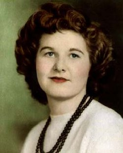

Jean Jennings Bartik was one of the original programmers for the ENIAC computer. Bartik studied mathematics in school then began work at the University of Pennsylvania, first manually calculating ballistics trajectories and then using ENIAC to do so. Bartik and her colleagues developed and codified many of the fundamentals of programming while working on the ENIAC, since it was the first computer of its kind. After her work on ENIAC, Bartik went on to work on BINAC and UNIVAC, and spent time at a variety of technical companies as a writer, manager, engineer and programmer. She spent her later years as a re-al estate agent and died in 2011 from congestive heart failure complications.
I was told I’d never make it to VP rank because I was too outspoken. Maybe so, but I think men will always find an excuse for keeping women in their ‘place’. So, let’s make that place the executive suite and start more of our own companies.
History
Jean Bartik, born Betty Jean Jennings on December 27, 1924, was one of the original programmers for the ENIAC computer.